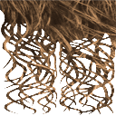
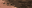
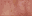
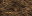

PAC 151552 → 147456 / 148000 bytes. Model, rigging, UVs, materials and all non-texture payloads identical to the frozen baseline. Gameplay validation pending.
Texture detail floors are relaxed. Native-observed GIM layouts, fixed material depth, alpha sampling and allocation checks remain enforced. Full decisions and candidates.
[32, 16] → [8, 8]; 1 useful colors in 16 fixed palette slots. Quality 1.000; alpha nearest samples preserved. Aspect retained: False.
[32, 16] → [32, 16]; 9 useful colors in 16 fixed palette slots. Quality 1.000; alpha nearest samples preserved. Aspect retained: True.
[32, 8] → [32, 8]; 3 useful colors in 16 fixed palette slots. Quality 1.000; alpha nearest samples preserved. Aspect retained: True.

[32, 8] → [32, 8]; 3 useful colors in 16 fixed palette slots. Quality 1.000; alpha nearest samples preserved. Aspect retained: True.

[32, 16] → [32, 16]; 2 useful colors in 16 fixed palette slots. Quality 1.000; alpha nearest samples preserved. Aspect retained: True.

[32, 8] → [32, 8]; 16 useful colors in 16 fixed palette slots. Quality 1.000; alpha nearest samples preserved. Aspect retained: True.

[32, 8] → [32, 8]; 7 useful colors in 16 fixed palette slots. Quality 1.000; alpha nearest samples preserved. Aspect retained: True.

[32, 8] → [32, 8]; 7 useful colors in 16 fixed palette slots. Quality 1.000; alpha nearest samples preserved. Aspect retained: True.

[128, 128] → [128, 128]; 256 useful colors in 256 fixed palette slots. Quality 1.000; alpha nearest samples preserved. Aspect retained: True.

[128, 128] → [64, 128]; 256 useful colors in 256 fixed palette slots. Quality 0.819; alpha nearest samples preserved. Aspect retained: False.

[128, 64] → [128, 64]; 30 useful colors in 256 fixed palette slots. Quality 1.000; alpha nearest samples preserved. Aspect retained: True.

[32, 8] → [32, 8]; 14 useful colors in 16 fixed palette slots. Quality 1.000; alpha nearest samples preserved. Aspect retained: True.

[32, 8] → [32, 8]; 16 useful colors in 16 fixed palette slots. Quality 1.000; alpha nearest samples preserved. Aspect retained: True.


[32, 8] → [32, 8]; 9 useful colors in 16 fixed palette slots. Quality 1.000; alpha nearest samples preserved. Aspect retained: True.

[32, 8] → [32, 8]; 5 useful colors in 16 fixed palette slots. Quality 1.000; alpha nearest samples preserved. Aspect retained: True.

[32, 16] → [32, 16]; 16 useful colors in 16 fixed palette slots. Quality 1.000; alpha nearest samples preserved. Aspect retained: True.

[32, 16] → [32, 16]; 2 useful colors in 16 fixed palette slots. Quality 1.000; alpha nearest samples preserved. Aspect retained: True.

[32, 16] → [32, 16]; 15 useful colors in 16 fixed palette slots. Quality 1.000; alpha nearest samples preserved. Aspect retained: True.

[32, 16] → [32, 16]; 7 useful colors in 16 fixed palette slots. Quality 1.000; alpha nearest samples preserved. Aspect retained: True.

[32, 8] → [32, 8]; 1 useful colors in 16 fixed palette slots. Quality 1.000; alpha nearest samples preserved. Aspect retained: True.

[32, 16] → [32, 16]; 16 useful colors in 16 fixed palette slots. Quality 1.000; alpha nearest samples preserved. Aspect retained: True.

[32, 16] → [32, 16]; 12 useful colors in 16 fixed palette slots. Quality 1.000; alpha nearest samples preserved. Aspect retained: True.


[32, 16] → [32, 16]; 9 useful colors in 16 fixed palette slots. Quality 1.000; alpha nearest samples preserved. Aspect retained: True.

[32, 16] → [32, 16]; 14 useful colors in 16 fixed palette slots. Quality 1.000; alpha nearest samples preserved. Aspect retained: True.


[32, 16] → [32, 16]; 13 useful colors in 16 fixed palette slots. Quality 1.000; alpha nearest samples preserved. Aspect retained: True.

[32, 16] → [32, 16]; 9 useful colors in 16 fixed palette slots. Quality 1.000; alpha nearest samples preserved. Aspect retained: True.

[32, 8] → [32, 8]; 9 useful colors in 16 fixed palette slots. Quality 1.000; alpha nearest samples preserved. Aspect retained: True.